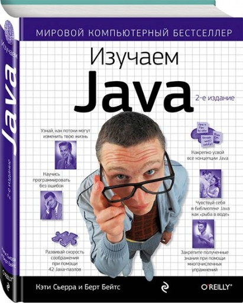

Проект "КНИГА ЗА КНИГУ"
Главная Контакты Аннотация к книге "Язык программирования Java SE 8. Подробное описание" Эта книга написана разработчиками языка Java и является полным техническим справочником по этому языку программирования. Она обеспечивает полный, точный и подробный охват всех аспектов языка программирования Java. В ней полностью описаны новые возможности, добавленные в Java SE 8: лямбда-выражения, ссылки на методы, методы по умолчанию, аннотации типов и повторяющиеся аннотации. В книгу также включено множество поясняющих примечаний. В ней аккуратно обозначены отличия формальных правила языка от практического поведения компиляторов. Об авторах Джеймс Гослинг - создатель языка программирования Java и бывший сотрудник Sun Microsystems. Он разработал исходный компилятор Java и виртуальную машину Java, и был главой проекта Andrew в университете Карнеги Меллон, где получил ученую степень в области информатики. С 2011 г. он работает в компании Liquid Robotics в качестве главного архитектора программного обеспечения. Билл Джой является одним из основателей компании Sun Microsystems и был главным архитектором версии Berkeley UNIX®, за которую и получил пожизненную награду от USENIX Association в 1993 г. Джой играл одну из центральных ролей в формировании языка программирования Java. Он присоединился к KPCB в качестве Greentech Partner в 2005 г. Гай Л. Стил, мл. - архитектор программного обеспечения в Oracle Labs, где он занимается исследованиями в области стратегий проектирования и реализации языков программирования, параллельных алгоритмов и компьютерной арифметики. Стил является одним из авторов языка программирования Scheme, сотрудником ACM и IEEE, и членом Национальной инженерной академии. Гилад Брача - создатель языка программирования Newspeak и бывший почетный инженер компании Sun Microsystems. До Sun он работал над языком Strongtalk в компании Animorphic Smalltalk System. Он имеет ученую степень в области информатики, полученную в университете штата Юта. Алекс Бакли - руководитель группы спецификации языка программирования Java и виртуальной машины Java в Oracle. Он имеет ученую степень в области информатики, полученную в имперском колледже Лондона. 5-е издание.
Наш адрес:123456, г. Санкт-Петербургтел. 0 (123) 456-789
©2017 Книга за книгу